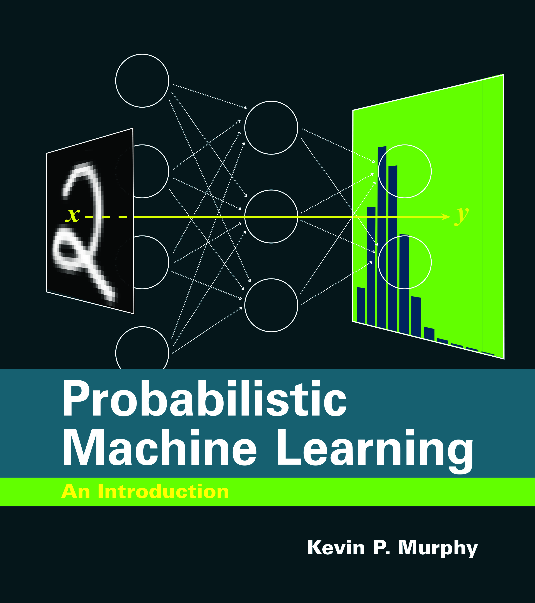
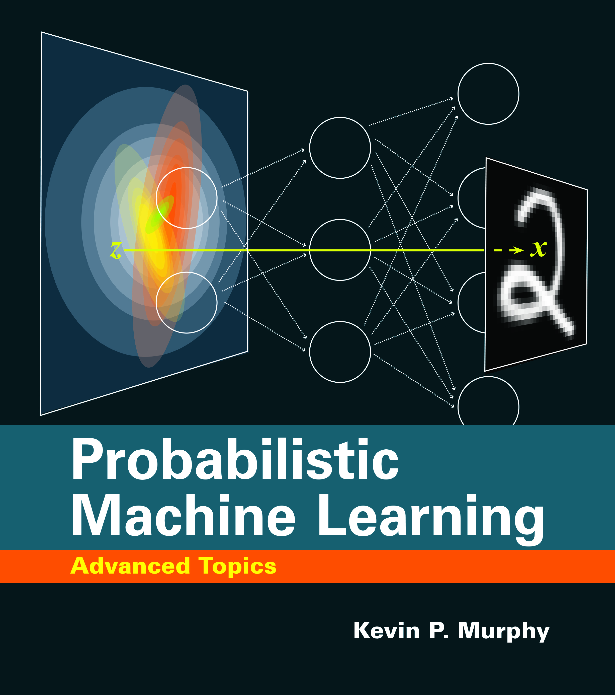

Probabilistic Machine Learning - Kevin Murphy
Rethinking machine learning through the Bayesian lens



Review
Introduction: what Is probabilistic machine learning?
Machine learning (ML) is the discipline that focuses on designing algorithms that allow computers to learn from data, make predictions, and improve over time without being explicitly programmed for each task. At its core, traditional machine learning can often be understood as a function approximation problem: given inputs X, learn a function f: X \rightarrow Y that maps those inputs to outputs. Many successful techniques—including decision trees, support vector machines, and deep neural networks—fit this paradigm and have achieved outstanding performance on tasks such as image recognition, language modeling, and game playing.
However, real-world problems are rarely deterministic or noiseless. Uncertainty, ambiguity, and incomplete information are the norm rather than the exception. This is where probabilistic machine learning (PML) becomes essential.
Probabilistic machine learning is a subfield of ML that emphasizes modeling uncertainty explicitly. Rather than producing a single output or estimate, a probabilistic model produces a distribution over possible outcomes, quantifying the confidence in each prediction. In this paradigm, learning is formulated as a problem of statistical inference: given observed data, infer the posterior distribution over unobserved variables (such as model parameters, latent states, or predictions).
At the heart of PML is the application of probability theory to every stage of the learning process:
- Bayesian reasoning allows incorporation of prior knowledge and principled uncertainty estimation.
- Latent variable models capture hidden structure in data.
- Graphical models express dependencies between variables clearly and concisely.
- Approximate inference methods (e.g., variational inference, MCMC) make complex models computationally tractable.
In short, probabilistic machine learning provides a principled, coherent, and extensible framework for designing models that reason under uncertainty and adapt to changing data distributions.
While traditional ML methods often prioritize point predictions and empirical accuracy, PML emphasizes:
- Uncertainty quantification
- Interpretability and diagnostics
- Robustness to noise and model misspecification
- Principled model comparison
- Decision-making under uncertainty
The rise of large-scale deep learning has produced models that are often opaque and poorly calibrated. As machine learning systems are increasingly used in critical applications—such as healthcare, finance, climate modeling, and autonomous vehicles—the ability to reason about uncertainty, causality, and decision-making becomes vital. PML provides the tools to:
- Assess when a model is unsure or operating out-of-distribution
- Build systems that can update beliefs as new evidence arrives
- Integrate domain knowledge via priors and structured models
- Make robust decisions in the face of uncertainty and risk
Modern advances—such as variational autoencoders, normalizing flows, Bayesian deep learning, causal inference frameworks, and probabilistic programming languages—have dramatically expanded the scope and scalability of PML.
Kevin Murphy’s trilogy of books stands out for presenting the field of machine learning entirely through the probabilistic lens. His work provides a unified view of learning, inference, prediction, and decision-making, making the case that probabilistic modeling is not an alternative to machine learning—it is its natural and rigorous generalization.
The trilogy
1. Machine Learning: A Probabilistic Perspective (2012)
Murphy’s first book, published in 2012, was a landmark achievement that laid the groundwork for much of the modern probabilistic approach to machine learning. Spanning over 1000 pages, it offers a comprehensive and mathematically rigorous treatment of probabilistic modeling, treating learning as a problem of statistical inference. The book begins with foundational material in probability theory and Bayesian statistics before delving into a broad array of topics such as supervised learning (regression and classification), unsupervised learning (clustering, dimensionality reduction), probabilistic graphical models (Bayesian networks and Markov random fields), and approximate inference techniques (variational inference, Markov Chain Monte Carlo). It also covers expectation-maximization, hidden Markov models, kernel methods, and Gaussian processes. This volume is notable for its unified framework that emphasizes modeling uncertainty, integrating prior knowledge, and reasoning about complex data using structured probabilistic methods.
Core content:
- Probability theory, Bayesian statistics, decision theory.
- Supervised learning: regression, classification, support vector machines.
- Unsupervised learning: clustering, dimensionality reduction.
- Probabilistic graphical models: Bayesian networks and Markov random fields.
- Approximate inference: variational methods, MCMC.
- Expectation-maximization (EM), mixture models, and hidden Markov models.
- Model comparison, selection, and overfitting.
- Kernel methods and Gaussian processes.
The book is methodical and mathematically grounded. It doesn’t shy away from complexity but presents concepts in a pedagogically sound manner. It serves both as a textbook and a reference, rich in examples and code snippets (originally in MATLAB/Octave).
While deep learning has dramatically changed the machine learning landscape since 2012, the foundations presented in MLAPP remain critically relevant. The probabilistic treatment of learning, inference, and model uncertainty continues to underpin research in Bayesian deep learning, causal inference, reinforcement learning, and decision-making.
However, the book does not cover recent developments such as generative models (GANs, VAEs, diffusion models), large-scale optimization in neural networks, or probabilistic programming systems, making it less suitable for those primarily focused on modern deep learning pipelines.
2. Probabilistic Machine Learning: An Introduction (2022)
This volume represents a pedagogical reboot and modernization of MLAPP. It revisits many of the same foundational topics but presents them with improved clarity, a more focused scope, and integration with modern tools such as JAX and NumPyro for probabilistic programming. The book begins with the fundamentals of probability theory and statistical inference, emphasizing both Bayesian and frequentist approaches. It then covers key techniques in supervised learning, such as linear and logistic regression, and introduces Gaussian distributions, conjugate priors, and hierarchical models. Latent variable models such as PCA and Gaussian mixture models are explored in accessible terms. Notably, the book introduces approximate inference using variational methods and connects them to probabilistic programming frameworks. It also addresses model evaluation techniques, such as cross-validation and information criteria, and concludes with an overview of Gaussian processes. Overall, this volume offers a solid, modern foundation in probabilistic modeling, suitable for both students and practitioners entering the field.
Core content:
- Probability and statistics for machine learning.
- Bayesian and frequentist inference.
- Maximum likelihood estimation, MAP, posterior predictive distributions.
- Conjugate priors, hierarchical models, and empirical Bayes.
- Gaussian distributions, linear regression, logistic regression.
- Gaussian processes (including scalable approximations).
- Probabilistic programming and variational inference.
- Decision theory and model evaluation (cross-validation, information criteria).
- Basic latent variable models: PCA, mixture models, factor analysis.
Several pedagogical enhancements that support learning and experimentation are introduced in this book. Readers are provided with runnable Jupyter notebooks, conveniently hosted in Google Colab, which allow for hands-on interaction with code and models. The book’s figures and illustrations are generated directly from these notebooks, enabling a tight integration between theory, visualization, and practice. The writing style emphasizes conceptual clarity without compromising on mathematical rigor, making advanced topics more approachable and easier to internalize for a wide audience.
This book is arguably more relevant than MLAPP for a newcomer or intermediate reader in 2025. It reflects the shift toward integrating probability with scalable modern tools and introduces practical workflows for modeling and inference. While it deliberately avoids diving deep into generative models or reinforcement learning, it sets a strong foundation for those topics.
Importantly, readers do not need to read Machine Learning: A Probabilistic Perspective before tackling this book. Probabilistic Machine Learning: An Introduction is designed to be self-contained and more accessible, making it an ideal starting point for those new to the field or those seeking a practical yet principled approach to probabilistic modeling.
For instructors designing machine learning or probabilistic modeling courses, it is an excellent primary textbook. than MLAPP for a newcomer or intermediate reader in 2025. It reflects the shift toward integrating probability with scalable modern tools and introduces practical workflows for modeling and inference. While it deliberately avoids diving deep into generative models or reinforcement learning, it sets a strong foundation for those topics.
For instructors designing machine learning or probabilistic modeling courses, it is an excellent primary textbook.
3. Probabilistic Machine Learning: Advanced Topics (2025 Draft)
The newly released draft of Advanced Topics is the final and most ambitious volume in Murphy’s trilogy. Designed as a natural progression from An Introduction, it targets readers already comfortable with the fundamentals of probabilistic modeling and Bayesian inference. This volume delves into state-of-the-art techniques that define the cutting edge of modern probabilistic machine learning.
Structure
The book is structured into six thematic parts:
Part I (Fundamentals) provides a deep theoretical base, covering advanced probability, exponential family models, divergence measures, and optimization principles. It also revisits graphical models in greater depth, including conditional random fields and structured representations.
Part II (Inference) focuses on modern approximate inference techniques. It presents Gaussian filtering and smoothing (e.g., Kalman filters and their nonlinear extensions), belief propagation on graphs, variational inference (both classic and black-box forms), and a suite of Monte Carlo methods including Hamiltonian Monte Carlo and sequential Monte Carlo.
Part III (Prediction) explores models for supervised learning and uncertainty-aware prediction. This includes generalized linear models, Bayesian neural networks, Gaussian processes with deep kernels, and models for handling non-iid data and distributional shift.
Part IV (Generation) is devoted to deep generative models. It introduces variational autoencoders, normalizing flows, diffusion models, autoregressive networks, and energy-based models, with careful attention to training objectives, model evaluation, and sampling.
Part V (Discovery) addresses unsupervised and representation learning. It covers latent factor models, state-space models, topic models, deep sequence modeling, graph structure discovery, and interpretability through the lens of probabilistic inference.
Part VI (Action) focuses on decision-making, reinforcement learning, and causality. Topics include decision theory, active learning, policy search, model-based and model-free reinforcement learning, influence diagrams, and modern approaches to causal inference including do-calculus, instrumental variables, and counterfactual reasoning.
Throughout, the book maintains a strong emphasis on scalable inference, modern software tools, and connections between theory and real-world applications. It is both technically deep and broad in scope, providing readers with the tools and intuition needed to work on contemporary research problems in probabilistic modeling, decision-making, and AI.
Technical depth and breadth
This volume is the most technically rigorous of the trilogy. It introduces advanced concepts from statistics, stochastic processes, signal processing, and control theory—disciplines that underpin many of today’s most impactful machine learning innovations. Its comprehensive treatment of probabilistic graphical models and information theory lays the groundwork for structured generative models and modern approaches to representation learning. The discussion of variational inference and Monte Carlo techniques directly supports scalable inference in applications such as variational autoencoders and Bayesian neural networks.
Reinforcement learning is explored through a probabilistic lens, emphasizing the “control as inference” paradigm, which has gained traction in contemporary deep reinforcement learning frameworks. The causal inference section equips readers with formal tools like do-calculus and instrumental variables, essential for understanding causality-aware systems now central to policy evaluation and scientific discovery.
Practical applications that embody these methods include: uncertainty quantification in medical diagnostics using Bayesian neural networks; model-based reinforcement learning in robotic control systems; causal effect estimation in healthcare and social science through counterfactual reasoning; high-fidelity image generation using diffusion models; and structural learning in genomics with probabilistic graphical models. These examples demonstrate how the book’s theoretical foundation translates into applied machine learning systems that operate under uncertainty with reliability and interpretability.
Overall, the volume serves as a bridge connecting classical probabilistic theory with the most recent developments in generative AI, causal discovery, and probabilistic decision-making under uncertainty.
Relevance today
Few books capture the breadth and depth of modern probabilistic machine learning like this one. The inclusion of cutting-edge generative models, reinforcement learning frameworks, and causal reasoning makes it highly relevant. The tight integration with the current state of research ensures that the book will remain a key reference for years to come.
However, it is not intended for beginners. It presupposes comfort with advanced probability, linear algebra, and statistical inference, as well as practical fluency with modern ML tools.
Recommendations
The following table is designed to help readers at different levels identify the most appropriate entry point into Kevin Murphy’s trilogy. Whether you’re a student just beginning to explore probabilistic methods or a researcher seeking depth in advanced generative modeling, this summary suggests a tailored path through the books. The guidance considers both the technical demands and the intended pedagogical focus of each volume.
| Reader profile | Suggested reading path |
|---|---|
| Undergraduate ML student | Probabilistic Machine Learning: An Introduction |
| Graduate student in ML/statistics | Introduction → Advanced Topics |
| ML instructor or course designer | Introduction as textbook, Advanced Topics for graduate seminar |
| Probabilistic programming/research engineer | Advanced Topics (esp. inference and generative models) |
| Causal inference/decision science researcher | Advanced Topics, especially Part VI |
| Deep learning expert seeking interpretability and uncertainty tools | Advanced Topics, especially Bayesian deep learning and conformal prediction |
| General ML practitioner | Introduction for foundation, followed by selected chapters from Advanced Topics |
Relation to contemporary trends in machine learning
Murphy’s trilogy is deeply relevant to the dominant themes and architectures that currently define machine learning research and application. Notably, the series intersects with several state-of-the-art paradigms such as large language models (LLMs), diffusion models, and other generative frameworks that have become increasingly influential.
In the context of LLMs, while Murphy’s books do not focus on transformer architectures directly, they provide the underlying probabilistic theory necessary to reason about uncertainty, representation learning, and approximate inference in high-dimensional models. This is critical for efforts in Bayesian deep learning applied to LLMs, such as uncertainty-aware language generation, model calibration, and adaptive fine-tuning. Additionally, the treatment of autoregressive modeling and structured sequence generation in the Advanced Topics volume aligns closely with the mathematical principles that underlie language models.
Regarding diffusion models—which have become central to generative image and video synthesis—Murphy’s final volume offers one of the few textbook treatments of these architectures from a probabilistic perspective. It places diffusion models in the broader landscape of score-based generative models, stochastic differential equations, and probabilistic denoising. This not only clarifies how these models work but also situates them in a principled framework for likelihood-based training and sampling.
Moreover, the books’ emphasis on latent variable models, variational inference, and probabilistic programming provides essential context for understanding hybrid approaches that combine deterministic deep networks with stochastic components—an increasingly common design in modern ML systems.
In sum, while Murphy’s books are not focused on deep learning trends per se, they offer foundational and theoretical insight that is crucial for interpreting, extending, and critiquing today’s most influential machine learning models.
Verdict
Kevin Murphy’s Probabilistic Machine Learning trilogy offers an exceptional and enduring contribution to the field of machine learning. It accomplishes what few educational resources have: it builds a conceptual and mathematical bridge between foundational statistical thinking and the evolving frontier of machine learning research.
Machine Learning: A Probabilistic Perspective serves as a deep and comprehensive reference text, best suited to readers with a solid foundation in mathematics and a desire to explore classical probabilistic modeling in depth. Despite its age, it remains highly relevant for understanding the theoretical underpinnings of the field.
Probabilistic Machine Learning: An Introduction is the most accessible and pedagogically refined volume. It strikes a balance between formal rigor and practical usability, making it the best entry point for students, practitioners, and instructors aiming to teach or learn probabilistic reasoning in modern contexts.
Probabilistic Machine Learning: Advanced Topics is a masterful synthesis of recent innovations, making it a must-read for researchers, PhD students, and experienced engineers interested in state-of-the-art techniques for uncertainty modeling, generative modeling, causality, and decision-making under uncertainty.
Collectively, these volumes are more than just textbooks—they form a modern curriculum for anyone serious about understanding and building intelligent systems capable of reasoning under uncertainty. Whether used in academia, research, or applied settings, Murphy’s trilogy provides the theoretical backbone and practical insight necessary to advance the field of machine learning responsibly and rigorously.
Info
| Subject | Content |
|---|---|
| Title | Probabilistic Machine Learning (3-volume series) |
| Years | 2012 (MLAPP), 2022 (Introduction), 2025 (Advanced Topics, draft) |
| Author | Kevin P. Murphy |
| Publisher | The MIT Press |
| Language | English |
| Topics | Bayesian statistics, probabilistic inference, graphical models, generative models, reinforcement learning, causality |
| Downloads | |
| Other links | |
| ISBNs | 978-0262046824 (Introduction), 978-0262048378 (Advanced Topics) |
| Buy online |